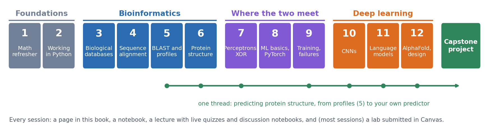

Session 0: Introduction to the Course
Sources for this page: the course’s own introduction slides from earlier years, updated for this version of the course. Dates, rooms, deadlines and this year’s teaching assistants are on Canvas, not here.
What this course is about
KB8029 brings two subjects together: bioinformatics, the computational analysis of biological sequences and structures, and machine learning, in particular the neural networks behind today’s methods. They are not taught as two separate halves. The classical bioinformatics methods motivate the machine learning, and the machine learning is applied to the same biological problems.

By the end of the course you should be able to
- find, retrieve and compare biological sequences and structures using the main databases and tools;
- explain how the classical methods work: alignment, substitution matrices, profiles and database searches;
- build, train and evaluate neural networks in PyTorch, and judge whether a result is real;
- explain how modern deep-learning methods for proteins work, from convolutional networks and protein language models to AlphaFold;
- design, train and evaluate your own secondary-structure predictor (the capstone project).
The full plan is on the Course Schedule page.
How a session works
Each of the twelve sessions has the same parts:
| Part | Where | What it is for |
|---|---|---|
| The page | this book, e.g. Session 1 | the material of the session, with self-study questions and a short quiz at the end |
| The course notebook | this book, linked from each page, with an “Open in Colab” badge | the same material in code; read it, then run and change it |
| The lecture | on site | explanations, live coding, and short discussion problems you work on in groups (notebooks opened by QR code) |
| Live quizzes | quiz.bioinfo.se, on your phone | quick questions during the lecture, to check what has landed |
| The lab | a separate lab notebook in this book, questions on Canvas | most sessions; hands-on work with real data, submitted as a short online quiz |
How much time each session takes, split into reading and lab, is in the table Expected workload.
Read the page before the lecture: the lectures assume you have seen the material once, and use the time for the parts that are hard to learn alone. The exception is this first morning, which covers Sessions 0 and 1 together, so its reading is sent out before the course starts (below). Lectures are not recorded.
Where to find everything
| What | Where |
|---|---|
| Course pages and notebooks (this book) | course.bioinfo.se |
| All course pages as one PDF | KB8029-course-notes.pdf |
| Schedule, rooms, deadlines, announcements, lab quizzes, discussion forum | Canvas (the course appears there once you are admitted) |
| Live quizzes during lectures | quiz.bioinfo.se |
| Setting up VS Code and Colab | Setup |
| The session-by-session plan | Course Schedule |
| Exam, grading, labs, plagiarism, AI tools, weekly schedule, student office | Course Information & Logistics |
| The capstone project | Capstone project |
| Past exams | Exam preparation |
| Further reading for the whole course | References |
People
The course has two teachers, one for machine learning and one for bioinformatics, and teaching assistants who run the lab sessions. This year’s teachers and teaching assistants are listed on Canvas.
Ask questions in the Canvas discussion forum, where everyone can see the answers. The teaching assistants help during the scheduled lab hours; do not expect immediate help at other times.
Help us improve the course
Everything in this course, the pages, the notebooks, the labs and the slides, is open access: written from scratch and free for anyone to read and reuse. This is also the first year of this version of the course. We have written it with care, but it is not perfect. You will find errors, explanations that do not work for you, and notebooks that break when a library changes. You are the first readers, so you are the ones who find them, and we really appreciate it when you tell us. Every message is read by the teachers, and each one makes the course better, for you and for the students after you.
- With a university account: use the feedback form and log in with your university account. You can choose the session, say where the problem is, and send it anonymously if you like. The form is also linked at the bottom of every page.
- With a GitHub account: open an issue on the course’s GitHub page. Issues are public, so everyone can see the problem, the discussion and the fix; they are not anonymous. This works well for errors in the text and for notebooks that do not run.
- Without either: email arne@bioinfo.se with the subject “KB8029 feedback”.
Feedback never affects your grades. The form is for improving the material; questions about the content belong in the Canvas discussion forum, where everyone sees the answer. The official course evaluation at the end of the course is separate, so please fill that in as well.
The rules, in brief
To pass, you need to pass all the labs, the capstone project (a secondary-structure predictor of your own: a Colab notebook, a short report, and an oral presentation of your code to a teaching assistant) and the exam. Your work must be your own, and AI tools may help you understand but must not write your labs or report. The grading, the grade scale, and the rules on plagiarism and AI tools are on the Course Information & Logistics page.
At SciLifeLab
The lectures and labs are at SciLifeLab in Solna:
- Address: Science for Life Laboratory (SciLifeLab), Tomtebodavägen 23A, 171 65 Solna (map).
- Public transport: bus 3 (or others) to Tomteboda-Karolinska inst. (Solna).
- Rooms: most lectures and labs are in Air&Fire (Gamma 2); a few events are in other rooms in Gamma 2, Gamma 7 or Alfa 2. The room of each lecture and lab is in the Canvas schedule.
- Teachers’ offices: Alfa, floor 6.
- Directions from the research group’s page: https://bioinfo.se/contact/.
You need a SciLifeLab access card to enter and leave the building; when and where to collect it is announced by email or on Canvas.
- Use your card every time you pass the speed gates, on the way in and on the way out.
- The gates let one person through at a time. To let a visitor in, use your card twice, with a few seconds in between, or the alarm goes off.
- Never force your way through a gate.
Computers
All notebooks and labs run on Google Colab, which gives free access to a GPU. The labs are done in VS Code on your laptop, with the notebook running on a Colab machine; the course notebooks can also be opened in Colab in the browser. So the only things you need are a laptop with VS Code and git, and a Google account. The Setup page takes you through it. Even the structure viewing in Session 6 is done with PyMOL inside a notebook, so nothing else has to be installed.
If you do not have a laptop that can do this, tell us now, not on the day of a lab.
Before the first lecture
Sessions 0 and 1 are the same morning, so this list has to be done before the course starts. It is sent to you by email a week before, and it is the only preparation that cannot wait until the day.
- Accept the course invitation on Canvas, and check the schedule there. To get the lectures, labs and lab deadlines in your own calendar, subscribe to https://course.bioinfo.se/kb8029.ics (Google Calendar: Other calendars → From URL; Outlook: Add calendar → Subscribe from web); it updates itself when the schedule changes.
- Open quiz.bioinfo.se on your phone and check that you can log in.
- Read the Session 1 page, the mathematics refresher, and try its practice problems. It is the longest reading in the course, so start early. If you do not manage all of it, read the parts on vectors and derivatives: the lecture builds on those. Nothing else has to be read in advance.
Before Session 2
Session 2 has the first lab, and it runs on Colab. Before it, work through the Setup page: install VS Code, git and the Google Colab extension, clone the course notebooks into VS Code, and make sure you can run a lab notebook on Colab from VS Code. Setting up takes about half an hour, and it is easier to sort out problems before the lab than during it.
What’s next
Session 1 refreshes the mathematics the course relies on: vectors and matrices, derivatives and gradients, and probability, likelihood and entropy. Session 2 does the same for programming in Python.